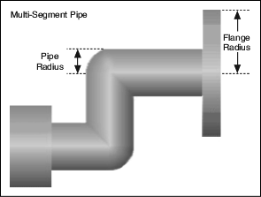

Short Name: PipeRadius
Requires: Base Development System
Class: MultiSegmentPipe Properties
To Use: Create a property.
Gets or sets the radius of the pipe segments in a pipe network. All pipe segments in a pipe network have the same radius.
The pipe radius is the distance, in pixels, between the center of a pipe segment to the edge of the pipe segment. The maximum pipe radius is one pixel less than the radius of the narrowest flange. The radius of a flange is equal to the pipe radius plus the flange width. The minimum pipe radius is five pixels. LabVIEW returns an error if you specify a pipe radius greater than the maximum or less than the minimum pipe radius.
The following illustration shows the pipe radius.

You also can set the pipe radius interactively.
The following table lists the characteristics of this property.
| Data type | |
| Permissions | Read/Write |
| Available in Run-Time Engine | Yes |
| Available in Real-Time Operating System | Yes |
| Settable when the VI is running | Yes |
| Loads the front panel into memory | No |
| Need to authenticate before use | No |
| Loads the block diagram into memory | No |
| Remote access allowed | Yes |